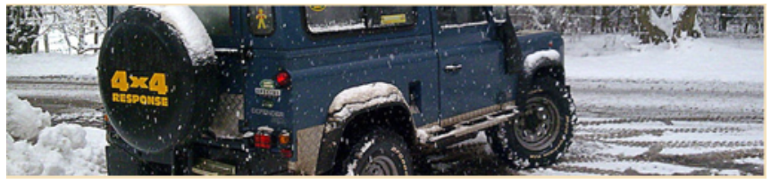
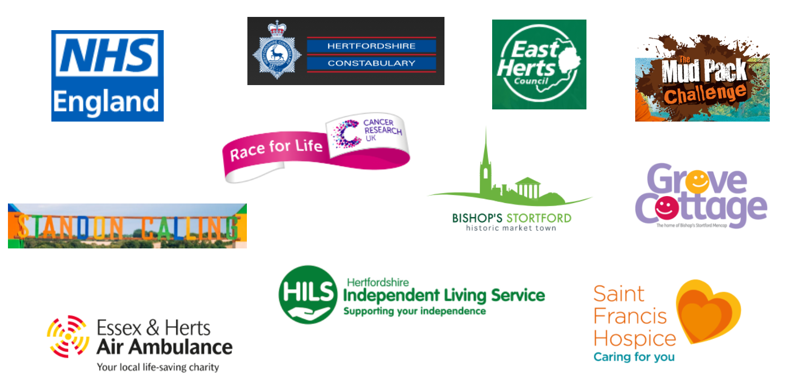

More about Herts 4x4 Response
About 4x4 Response UK Where we cover Who we support
|
We are a small group of 4x4 owners who enjoy using our vehicles for the purpose they were intended (with a Community focus). We may work with the local Emergency Services, local Councils and local Voluntary organisations throughout the year, but it is predominantly in the Winter season that this may occur. During the other seasons, we assist (Cancer Research UK Race for Life events, other charities and local Council events), with Event Set-up/Breakdown, Traffic Management, Marshalling, etc. We may also assist other neighbouring 4x4 Response Groups. It is preferable, but not essential, that members have some experience of driving their vehicles in inclement weather and over uneven terrain. Members are not required to be formally trained in how to use their 4x4, but it certainly helps. We arrange training days, to raise confidence levels in using a 4x4 vehicle, in circumstances not usually found on tarmac. At times, we may be required to use specialist equipment/techniques and Radios, after some training. Response Volunteers who do not have a 4x4, support the team through other activities such as: Event support, Marshalling, Publicity or Admin, etc. |

We do not do serious ‘off-roading’ or mud-larking, as most of our vehicles are our regular run-abouts. |
About 4x4 Response UK

National
4x4 Response is a national CIO Charity and operates at two distinct levels.
National and Regional. Nationally, it is called 4x4 Response UK and acts as an
umbrella organisation supporting the Regional Groups. It is constituted as a
Charity with a group of Trustees, elected by its members. Regionally, each
Group is run autonomously, on a day-to-day basis (This is where the fun
happens).
Regional Groups
Members, use their own 4x4 vehicles. Relationships are built with local
‘clients’ and Local Resilience Forums to assist them, as and when required.
Regional Groups can be called upon by any Category 1 or 2 Responder (as defined
by the Civil Contingencies Act 2004) and by Voluntary and Commercial agencies,
with whom they have an agreement. Regional Groups can work directly with
‘clients’ either ‘On Standby’, ‘Call Out’ and occasionally provide mutual
support for neighbouring 4x4 Response Groups. Not all Regional Groups are
individual charities, although some have gained this status.
Where we cover

Who we support
